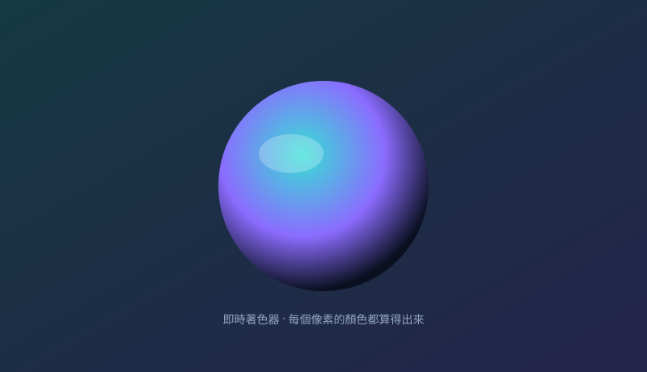

下面三個小示範，全部用您的瀏覽器即時運算。您動滑鼠、拖拉桿，結果當場變——這正是我們「看得見、驗得過」的做事方式。想看更進階的？我們把類傳送門 2 的物理模擬也做成了能玩的實驗場。
電腦畫任何東西，都要經過一連串步驟：先把點的位置算好、再決定形狀、最後填顏色。左邊是即時畫出的三角形，右邊是這串步驟的燈號。

移動、轉角度、放大縮小，背後都是同一張「數學表」。拖下面的拉桿，左邊三角形立刻跟著動，右邊顯示當下的數學表——您看到的每個位移，都有數字可以解釋。
您螢幕上的圖，是由千百萬個小點組成。左邊這片流動的顏色，是電腦對「每一個小點」依公式即時算出來的；右邊則是一顆會轉的立體方塊，展示畫面怎麼呈現立體感。